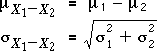

Difference between two variables
If X1 has mean µ1 and standard deviation σ1, and X2 has mean µ2 and standard deviation σ2, then the mean and standard deviation of the difference, X1 - X2, are

The distance between the top of the woman's head and a fixed location (the ground or door frame) has lower spread than the distance to a variable location (the top of the man's head).